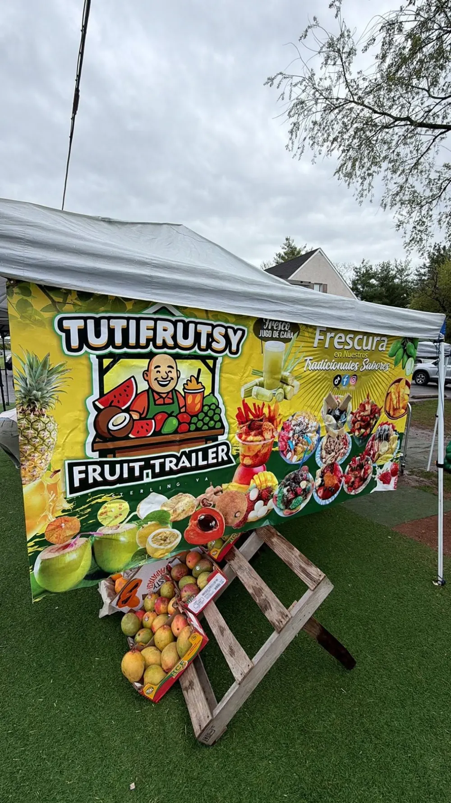

Sterling, Virginia
Fruta preparada, minutas y sabores tropicales en Sterling, VA
Visitenos en Tutifrutsy y disfrute fruta fresca, minutas, agua de coco, jugo de caña, pan dulce y antojitos preparados con sabor de casa.
Favoritos de la casa
Lo mas pedido
Los favoritos que mas se antojan: minutas, snacks preparados, frutas frescas, miel y bebidas naturales para disfrutar en Tutifrutsy.
Menu sin complicaciones
Que vendemos
Frutas, bebidas y antojitos para pasar por algo fresco, dulce o picosito.
Fruta preparada
Mango preparado con chamoy, Tajin, sal alguashte, limon y chile. Tambien pepino preparado, jocotes y jicama.
Minutas
Minutas sencillas, con frutas, con jaleas de tamarindo, con conserva de coco y con leche condensada.
Bebidas naturales
Agua de coco y jugo de caña para acompanar el antojo.
Fruta fresca
Lichas, mamones, papaya y otras frutas frescas disponibles segun temporada.
Pan dulce y snacks
Pan dulce, chips de platano, chips de yuca, semillas de maranon y botes de miel.

Videos del negocio
Mire lo que preparamos
La red social principal de Tutifrutsy es TikTok, donde se ve el puesto, la fruta fresca y los antojitos listos para disfrutar.
Nuestra historia
Sabor familiar en Sterling
Somos un negocio local y familiar en Sterling, Virginia. En Tutifrutsy queremos que cada cliente disfrute productos frescos, preparados con sabor y servidos con alegria.
Aqui encuentran fruta preparada, minutas, bebidas naturales, pan dulce, snacks y antojitos que recuerdan ese sabor de casa. Y no lo decimos solo nosotros: nuestros clientes regresan por la fruta, las minutas, la miel y, sobre todo, por el servicio.
En Tutifrutsy lo atendemos mejor que en su casa.
Visitenos
Donde estamos
Estamos en Sterling, VA, con fruta fresca, minutas y antojitos tropicales para disfrutar en persona.